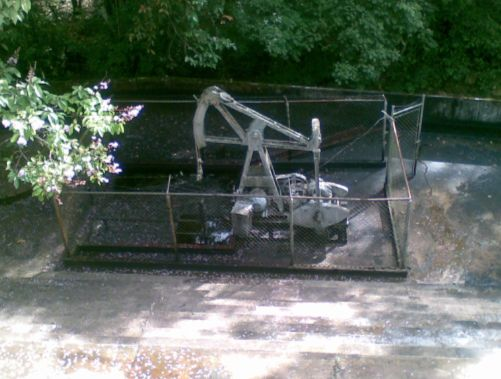
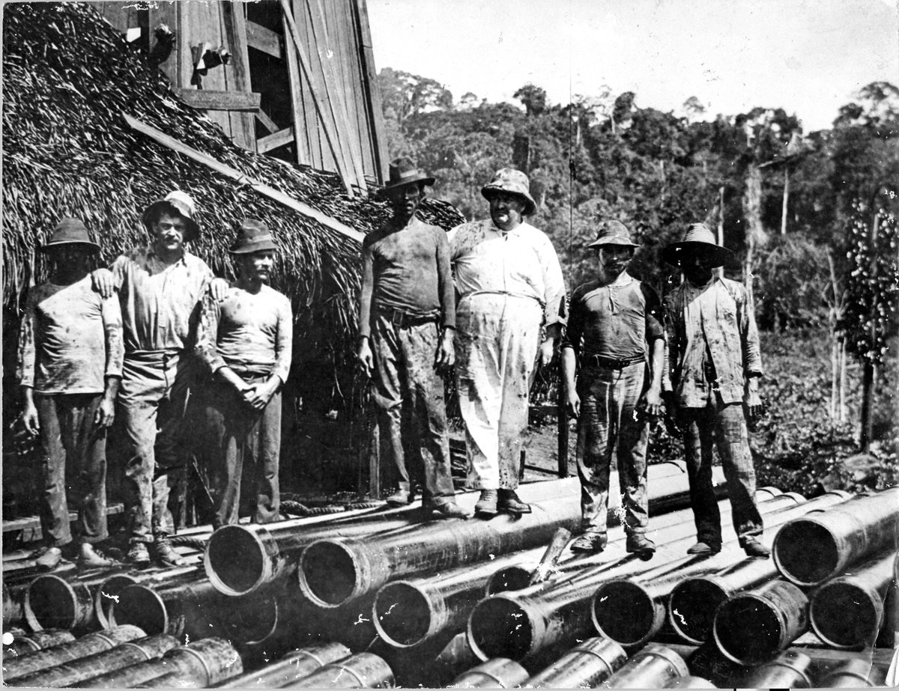
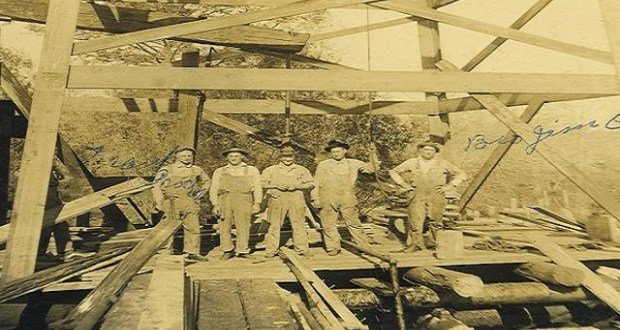
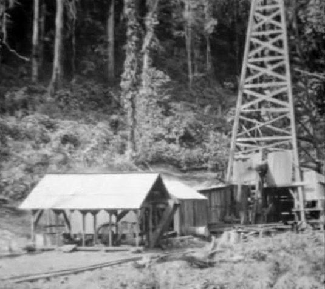
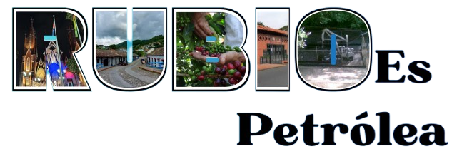

La Compañia Minera Petrolea del Táchira, marco un antes y después en la historia, no solo de éste municipio, sino de toda una nación, dando inicio a la Era Petrolera del país.
Los Rubienses fueron pioneros en este tipo de industria a nivel Nacional, llegando a generar en esa época diversos productos, como lo fue el gasoil, la gasolina, el kerosen y 220 galones de residuos de petróleo.
Se crearon 906 acciones en total, las cuales fueron divididas de la siguiente forma:
El Médico Ingeniero doctor Carlos Gonzalez Bona realizaba recorridos para visitar pacientes en diversas zonas del municipio; pero le llamó la atención al pasar por la hacienda "La Alquitrana" que en la quebrada se observaba un líquido negro, viscoso y aceitoso.
Por lo que realizó una propuesta a Don Manuel Antonio Pulido Pulido, quien era dueño de este lugar, para que investigara qué tipo de químico era el que se observaba.
Ocurre el 18 de mayo de este año un fuerte temblor, con epicentro en la ciudad de Cúcuta, que causó diversos estragos tanto en Colombia como en el vecino país Venezuela. La Alquitrana fue una de las zonas afectadas, ya que se abrieron grietas enormes de las que empezó a surgir petróleo.
Y eran tantas las cantidades de este material natural que iniciaron a salir, que un campesino asustado le dijo a Don Manuel Antonio Pulido Pulido: "El día que la tierra está escupiendo negro".
Se fundo la Compañía Privada: "Compañía Hullera del Táchira", y sí no leiste mal, al inicio pensarón en ese entonces que lo que apareció, era un mineral llamado "Hulla" que es un tipo de carbon mineral. Y no fue hasta que más tarde se dieron cuenta que en realidad era Petróleo.
Pedro Rafael Rincones viaja a Estados Unidos, con el fin de capacitarse en el tema petrolero, ya que para ese entonces ese país ya tenía esperiencia en este ambito convirtiendose en el primer técnico. Además, adquiere la primera carga (refiere al termino de perforador), muy artesanal para la epoca.
Llega al puerto del Lago de Maracaibo, lo que era el primer taladro, pero trasnportarlos a estás montañas fue toda una travesía, debido a que toco traer desarmado en las piezas que lo componen, a lomo de mulas y bueyes.
Se dió inicio, a la primera perforación de un pozo petrolifero, pero está misión se suspende debido a que el taladro se rompio.
Durante este año, ocurrieron 3 momentos cruciales para esta Compañía:
Son abierto en su totalidad la cantidad de 5 pozos, siendo los principales el pozo Eureka (el primero), y el Salvador. Además, que llegaron a producir, para este entonces, la cantidad de 60 galones de gasolina, 175 galones de Kerosen (que alimentaban las lamparas de la época), 150 de gasoi, 220 galones de residuos, entre otros derivados que extrajeron.
La Compañía Nacional Petrolea Minera del Táchira, se presento en una exposición Nacional realizada en Caracas en honor al natalicio de de Simón Bolívar, donde exhibieron el kerosen y otros productos, realizados en Rubio que lentamente fueron marcando el inicio de la nueva era económica Venezolana.
El 15 de noviembre , se hace oficial el cambio de nombre de la Compañía Hullera del Táchira, al nombre con el que se conoce hasta el día de hoy que es: “Compañía Nacional Minera Petrolea del Táchira”.
En la ciudad de Caracas, el actual presidente de la República, el General Antonio Guzmán Blanco, firmó y represento el título definitivo de esa Concepción de la Petrolea.
Debido a diversos problemas administrativos, técnicos... ocasionaron que la Compañía dejara de explotar petróleo en esta zona, y esto derivo en que los técnicos, se trasladaran a otras zonas delpaís para empezar a hacer estudio de en que parte se pudiera conseguir este material (como lo es el Lago de Maracaibo).